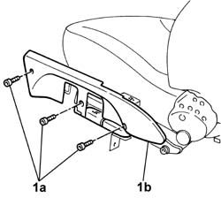
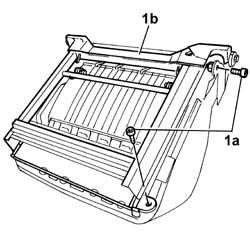
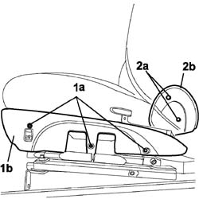

7045A34 manual device for adjusting seat height - r r with seat removed
- Path
- Procedures > 70 FITTINGS > 7045 FRONT SEATS > 7045A front seat assembly > 7045A34 manual device for adjusting seat height - r r with seat removed
- Kind
- repair procedure (removal / refitting; the operation number is the code)
- Applies to
- all engines; all production periods
- Interactive page
- https://sloeber94.github.io/elrnDB-fDbl/en/#/2585172
Applies to: all engines; all production periods
 Removing
Removing
 Refitting
RefittingOp. 7045A22 SUPPORT/GUIDE FOR FRONT SEAT, LEFT OR RIGHT - R.R. WITH SEAT REMOVED
1. Undo the bolts (1a) and remove the side trim (1b).

Applies to: all engines; all production periods
1. Undo the bolts (1a) and remove the manual driver seat height adjustment device (1b).

Applies to: all engines; all production periods
Refitting
RemovingFit the manual driver seat height adjustment device and tighten the fixing bolts to torque.
 | Fastening | Component | Ø | Value (daNm) |
|---|---|---|---|---|
- | Bolt | DRIVER'S SEAT HEIGHT ADJUSTMENT DEVICE | M8 | 1.5 |
Position the side trim and secure it using the bolts.
Op. 7045A22 SUPPORT/GUIDE FOR FRONT SEAT, LEFT OR RIGHT - R.R. WITH SEAT REMOVED
Applies to: engines: 1.6 16v, 1.3 JTD 16V, 1.9 JTD 8V; all production periods; only with equipment: 7 seater
Removing
RefittingCarry out
Op. 7045A22 SUPPORT/GUIDE FOR FRONT SEAT, LEFT OR RIGHT - R.R. WITH SEAT REMOVED.
1. Undo the bolts (1a) and remove the side trim (1b).
2. Undo the bolts (2a) and remove the side joint cover trim (2b).
Carry out the same operation for the remaining side trim.

Applies to: engines: 1.6 16v, 1.3 JTD 16V, 1.9 JTD 8V; all production periods; only with equipment: 7 seater
1. Undo the bolts (1a) and remove the manual driver seat height adjustment device (1b).
Applies to: engines: 1.6 16v, 1.3 JTD 16V, 1.9 JTD 8V; all production periods; only with equipment: 7 seater
Refitting
RemovingFit the manual driver seat height adjustment device and tighten the fixing bolts to torque.
Position the joint cover side trim and secure it using the bolts.
Carry out the same operation for the remaining side trim.
Position the side trim in its seat and secure it using the bolts.
Carry out
Op. 7045A22 SUPPORT/GUIDE FOR FRONT SEAT, LEFT OR RIGHT - R.R. WITH SEAT REMOVED.